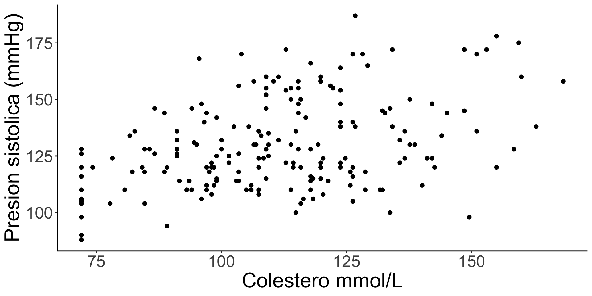

No es un paso mas o final en el análisis estadístico
No debería ser una receta metodológica
All models are wrong, but some are useful!. George E. P. Box
La regresión puede ser una herramienta poderosa para direccionar tres preguntas relevantes:
Los modelos de predicción se emplean para estimar el riesgo o efecto (o alguna otra medida epidemiológica).
Esta estimación se basa en la información proporcionada por los predictores o covariables.
En el ámbito empresarial para pronosticar el desempeño financiero y para modelar el comportamiento de compra del consumidor y de pago de préstamos.
En ingeniería: los modelos de supervivencia se emplean para predecir la vida útil de productos.
En la ecología, los modelos de regresión predicen la probabilidad de que una especie de pez desaparezca de un lago.
En el ámbito legal, los modelos son comunes en litigios por discriminación para intentar determinar si la raza o el sexo se utilizaron como base para la contratación o promoción, después de tener en cuenta otras características del personal.
Diagnóstico: Predecir la probabilidad de que un paciente tenga una enfermedad específica.
Pronóstico: Predecir el curso temporal de una enfermedad ya diagnosticada.
Estimación de efectos absolutos en ensayos clínicos aleatorios: Incluso en experimentos aleatorios bien diseñados, el modelado es necesario para estimar los efectos absolutos.
Ajuste de sesgos en estudios observacionales: Son muy importantes para controlar los sesgos causados por la asignación no aleatoria de tratamientos. (Estimar el efecto del factor de interés de forma más pura).
Cálculo de la Puntuación de Propensión (Propensity Score): permite un ajuste más agresivo de la asignación no aleatoria de tratamientos.
Inferencia Causal: Escenario counterfactual
Puntos Clave para la Planificación del Modelado
Evitar Muestras de Conveniencia: Estas muestras suelen estar plagadas de dificultades, ya que no fueron recolectadas pensando en el modelo predictivo.
Un modelo será más preciso y útil si la recolección de datos se planea prospectivamente, estableciendo definiciones estándar y minimizando los datos faltantes.
Evitar el Sobreajuste (Overfitting): El sobreajuste ocurre con frecuencia, lo que lleva a predicciones demasiado extremas o asociaciones falsas. (n = 50 y 30 variables).
Evitar Extrapolaciones: No se debe hacer predicciones al extrapolar combinaciones de valores de predictores que están fuera del rango utilizado para desarrollar el modelo.
Prohibición de Categorizar Variables Continuas: Es imprudente categorizar variables naturalmente continuas durante la recolección de datos
| Tipo de variable dependiente | Modelo estadístico |
|---|---|
| Continua | Regresión lineal |
| Binaria (sí/no) | Regresión logística |
| Conteo (número de eventos) | Regresión de Poisson / Binomial Negativa |
| Tiempo hasta evento | Modelos de supervivencia (Cox, paramétricos) |
| Ordinal (categorías ordenadas) | Regresión logística ordinal |
| Nominal (categorías no ordenadas) | Regresión logística multinomial |
| Tipo de variable dependiente | Modelo | Ejemplo aplicado |
|---|---|---|
| Continua | Regresión lineal | Relación entre presión arterial sistólica y edad en adultos |
| Binaria | Regresión logística | Probabilidad de tener tuberculosis según contacto previo |
| Conteo | Regresión de Poisson / Binomial Negativa | Número de casos de dengue por barrio en un mes |
| Tiempo hasta evento | Modelos de supervivencia (Cox, Weibull, etc.) | Tiempo hasta la recaída de pacientes con malaria tras el tratamiento |
| Ordinal | Regresión logística ordinal | Grado de severidad de la desnutrición infantil (leve, moderada, severa) en función de variables socioeconómicas |
| Nominal | Regresión logística multinomial | Tipo de desenlace obstétrico (parto eutócico, cesárea, parto instrumental) según factores maternos |
Modelo Lineal generalizado simple
\[ E(Y \mid X_1, X_2, \ldots, X_i) = \beta_0 + \beta_1 X_1 + \beta_2 X_2 + \cdots + \beta_i X_i\]
El modelo busca describir una relación entre una respuesta \(Y\) y un conjunto de predictores \(X = (X_1, X_2, ..., X_p)\).
Los parámetros \(\beta = (\beta_0, \beta_1, ..., \beta_p)\) representan:
Donde:
- \(E(Y \mid X)\): valor esperado de \(Y\) dado los predictores.
- \(\beta_0\): intercepto.
- \(\beta_j\): coeficientes que representan el efecto de cada variable \(X_j\).
\[C(Y | X)\]
El modelo de regresión describe cómo una propiedad de \(Y\) depende de \(X\):
En modelos lineales generalizados, se restringe a modelos lineales en los parámetros:
\[C(Y|X) = g(X\beta)\]
| Modelo | Expresión | Interpretación |
|---|---|---|
| Lineal | \(E(Y|X) = X\beta\) | Relación lineal, errores normales |
| Logístico | \(P(Y=1|X) = (1 + e^{-X\beta})^{-1}\) | Probabilidad binaria |
| Poisson | \(E(Y|X) = e^{X\beta}\) | Conteos o tasas |
| General | \(C(Y|X) = g(X\beta)\) | g puede ser no lineal |
\[h(C(Y|X)) = X\beta\]
Ejemplo: para regresión logística, aunque pretende estimar la probabilidad de un evento se trabaja con:
\[\text{logit}(P) = \log\left(\frac{P}{1-P}\right)\]
de modo que: \(h(\dots)\) es logit
\[\text{logit}(P(Y=1|X)) = X\beta\]
\[\beta_j = C'(Y|X_1,...,X_j+1,...) - C'(Y|X_1,...,X_j,...)\]

Datos muéstrales: La variable de respuesta \(Y\) para diferentes predictores \(X\)
Parámetros desconocidos: Los coeficientes \(\beta_j\) de las variables.
Important
Estimación por Máxima Verosimilitud
Sabemos el valor del parámetro (por ejemplo, la media o la probabilidad).
Entonces podemos calcular la probabilidad de observar ciertos datos:
\[P(\text{Datos} \mid \theta)\]
. . .
Ejemplo:
si sé que la probabilidad de enfermar es 0.3, puedo calcular la probabilidad de ver 3 casos en 10 personas.
\(P(k=3) = \binom{10}{k}0.3^k(1-0.3)^{10-k} = \binom{10}{3}0.3^3(1-0.3)^{10-3}\) = 0.2668279
Tenemos los datos observados: seleccione 10 personas y observe tres enfermos, ¿Cual es la probabilidad de enfermar?
Tip
“¿Qué valor de \(P\) hace más probable haber visto estos datos?”.
Asumiendo que cada observación (dato) es una realización independiente procedente de actuar el parametro. la probabilidad que los datos ocurran conjuntamente es el producto de sus probabilidades.
\[P(\text{Datos},\theta) =\binom{10}{3}P^3(1-P)^{10-3}\]
damos valores a \(P\) entre \(0\) y \(1\) y graficamos.
[Bioestadistica III]